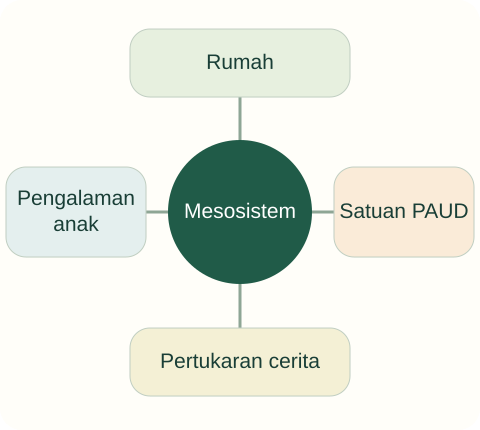

Tujuan pembelajaran
- Membedakan trisentra pendidikan dan jalur pendidikan
- Mengidentifikasi lingkungan langsung dan hubungan antarlingkungan
- Merancang kemitraan yang terjangkau keluarga
Pusat pendidikan dan jalur pendidikan
Gagasan trisentra dari Ki Hadjar Dewantara membantu melihat alam keluarga, perguruan, dan pergerakan pemuda sebagai tempat yang saling mendukung dalam pendidikan. Dalam penerapan saat ini, gagasan tersebut dapat dibaca melalui peran keluarga, satuan pendidikan, dan masyarakat. Pasal 13 UU No. 20 Tahun 2003 membedakan jalur formal, nonformal, dan informal. Jalur merupakan kategori penyelenggaraan. Keluarga memberi pengalaman informal sehari-hari, sementara masyarakat juga dapat menyelenggarakan layanan nonformal. Kedua kerangka dipakai untuk menjawab pertanyaan berbeda.
Mikrosistem dan mesosistem
Dalam ekologi perkembangan Bronfenbrenner (1979), mikrosistem adalah lingkungan tempat anak terlibat langsung melalui kegiatan, peran, dan hubungan. Rumah bersama nenek serta kelompok bermain di satuan PAUD merupakan dua contoh. Mesosistem menunjuk hubungan di antara lingkungan langsung itu. Ketika keluarga dan guru bertukar informasi tentang istilah tanaman, hubungan kedua lingkungan dapat memperluas kesempatan anak bercerita. Pengaruh lingkungan yang lebih luas juga dapat muncul secara tidak langsung, misalnya jadwal kerja pengasuh mengubah peluang bertemu guru.
Proses, pribadi, konteks, dan waktu
Model bioekologis Bronfenbrenner dan Morris (2006) memberi perhatian pada proses proksimal, yaitu interaksi timbal balik yang berulang dengan orang, benda, atau simbol di lingkungan dekat. Analisisnya juga mempertimbangkan karakteristik orang, konteks, dan waktu. Membawa satu gambar memberi kesempatan untuk membuka percakapan. Untuk menelaah proses yang berlangsung, lihat bagaimana anak dan orang dewasa berulang kali bertukar pertanyaan, pengalaman, dan cara menyelidiki tanaman.
Hubungan dengan keluarga perlu dirancang
Guru dapat mengundang cerita atau gambar tanpa mewajibkan keluarga membeli bahan atau datang pada jam kerja. Anak dapat menggunakan istilah dari rumah, lalu belajar padanannya ketika berkomunikasi dengan teman. Informasi dibagikan sesuai kebutuhan pendidikan dan dengan menghormati privasi keluarga. Kemitraan kemudian dinilai dari kualitas pertukaran dan peluang yang diperoleh anak.
Diagram konsep

Apa yang berubah ketika pengalaman rumah dan satuan PAUD saling terhubung?

Anak berbincang dengan nenek tentang daun di sekitar rumah. Keesokan hari ia membawa gambar daun ke satuan PAUD. Nenek bercerita kepada guru bahwa anak biasa menyebut tanaman itu dalam bahasa keluarganya.
- Apa yang anak bawa dari rumah?
- Siapa yang menjembatani kedua pengalaman?
Pembahasan kasus
Guru dapat mengajak anak membandingkan bentuk daun, meminta ia menjelaskan sebutan yang dipakai di rumah, dan mengundang keluarga menambahkan informasi bila memungkinkan. Bukti awalnya ialah apakah pengetahuan dari rumah dipakai dalam percakapan kelas.
Buka contoh penalaran setelah mencoba
Tunjukkan dua mikrosistem dan satu hubungan di antaranya.
Rumah bersama nenek dan satuan PAUD adalah mikrosistem. Percakapan nenek dan guru berperan pada mesosistem.
Latihan terbimbing
Buat peta rumah, kelompok PAUD, dan taman setempat. Tandai dua lingkungan yang dialami langsung anak dan jelaskan satu hubungan di antara keduanya.
Latihan mandiri
Rancang komunikasi sekolah–keluarga untuk satu kegiatan observasi lingkungan. Sertakan cara berpartisipasi bagi keluarga yang memiliki akses internet atau waktu terbatas.
Lihat pembahasan
mesosistem
Mesosistem mencakup keterhubungan lingkungan langsung yang diikuti anak.
Refleksi calon pendidik
Pengetahuan keluarga apa yang selama ini belum terhubung dengan pengalaman belajar di kelas?
Catatan hanya disimpan di peramban ini. Tidak dikirim kepada dosen.
Referensi dan bacaan pendamping
- Republik Indonesia. (2003). Undang-Undang Nomor 20 Tahun 2003 tentang Sistem Pendidikan Nasional.Fokus Pasal 1, 3, 13, dan 28. Status UU secara keseluruhan tidak berarti seluruh pasal bebas perubahan atau putusan pengadilan.
- Kementerian Pendidikan, Kebudayaan, Riset, dan Teknologi. (2022). Panduan implementasi bimbingan dan konseling untuk jenjang pendidikan dasar dan menengah.Rujukan penjelasan trisentra pada bagian kerja sama keluarga dan mitra.
- Bronfenbrenner, U. (1979). The ecology of human development: Experiments by nature and design. Harvard University Press.Kerangka ekologis klasik. Jangan menyamakan buku ini dengan seluruh perkembangan model bioekologis berikutnya.
- Bronfenbrenner, U., & Morris, P. A. (2006). The bioecological model of human development. In R. M. Lerner (Ed.), Handbook of child psychology: Vol. 1. Theoretical models of human development (6th ed., pp. 793–828). Wiley.Sumber model proses, pribadi, konteks, dan waktu.